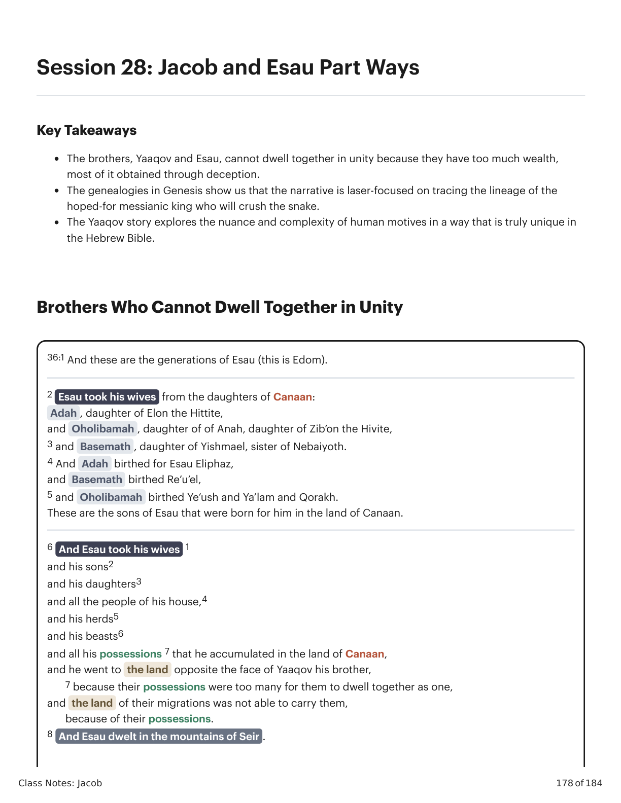
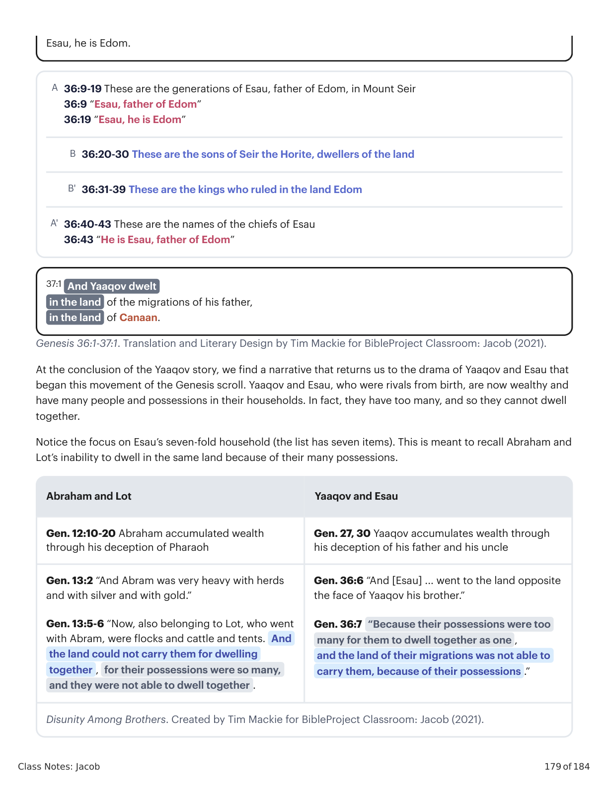
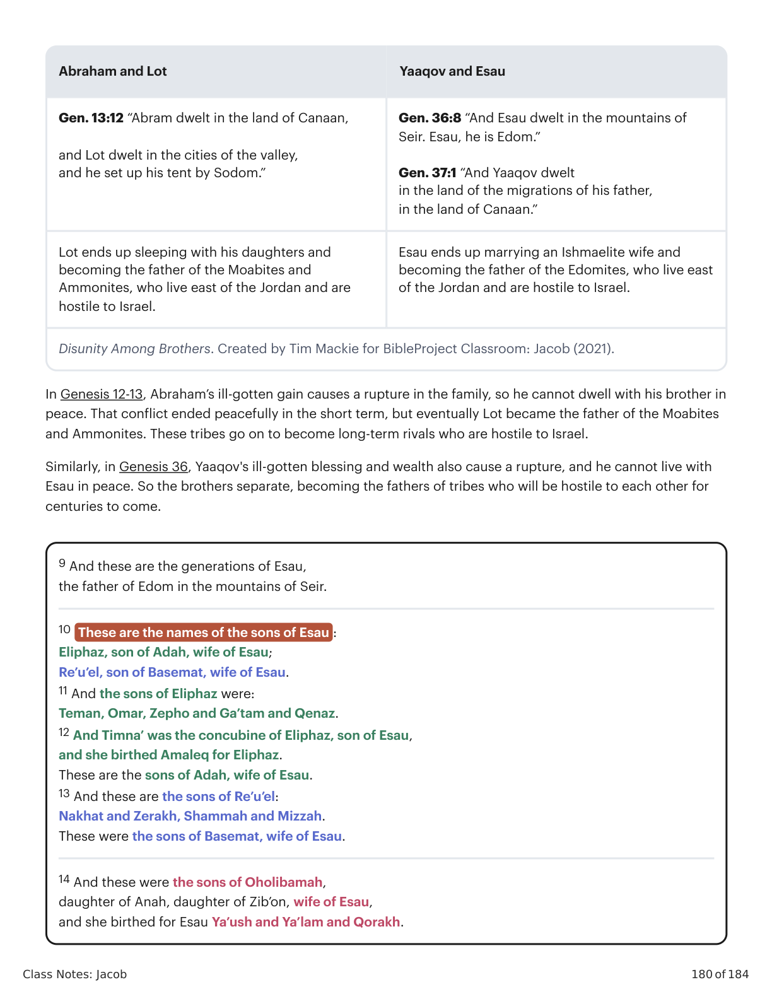
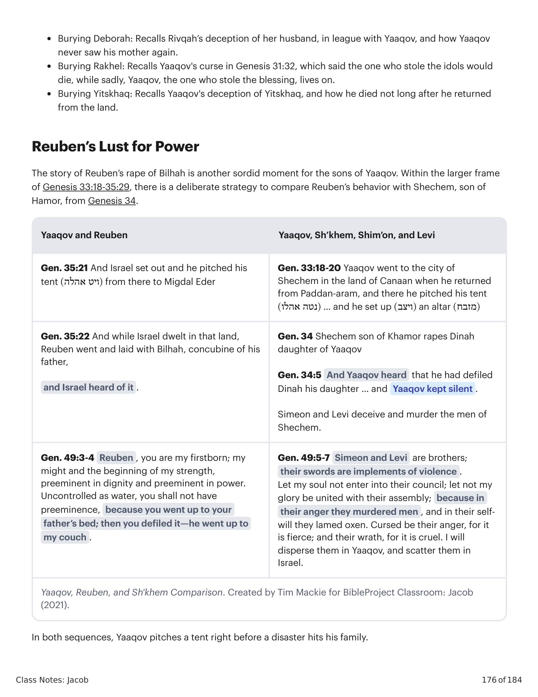

36:1 E estas são as gerações de Esaú (este é Edom). 2 Esaú tomou as suas mulheres das filhas de Canaã: Adá, filha de Elom o hitita, e Oolibamá, filha de Ana, filha de Zibom, o hivita. 3 e Basemat, filha de Ismael, irmã de Nebaiot. 4 E Adá deu à luz a Esaú Elifaz, e Basemat deu Reuel, 5 e Oolibamá deu Yeush, Yaalam e Qorac. Estes são os filhos de Esaú que lhe nasceram na terra de Canaã. 6 E Esaú tomou as suas mulheres, os seus filhos, as suas filhas, e todo o povo da sua casa, e os seus rebanhos, e os seus animais, e todos os seus bens que ele acumulou na terra de Canaã, e foi para a terra oposta à face de Jacó seu irmão, 7 porque as suas posses eram demasiadas para eles habitar juntos como um só, e a terra das suas migrações não conseguia sustentá-los, por causa das suas posses. 8 E Esaú habitou nas montanhas de Seir.36:1 And these are the generations of Esau (this is Edom). 2 Esau took his wives from the daughters of Canaan: Adah, daughter of Elon the Hittite, and Oholibamah, daughter of Anah, daughter of Zib’on the Hivite, 3 and Basemath, daughter of Ishmael, sister of Nebaiyoth. 4 And Adah bore to Esau Eliphaz, and Basemath bore Reu’el, 5 and Oholibamah bore Ye’ush and Ya’lam and Qorakh. These are the sons of Esau that were born for him in the land of Canaan. 6 And Esau took his wives, his sons, his daughters, and all the people of his house, and his herds, and his beasts, and all his possessions that he accumulated in the land of Canaan, and he went to the land opposite the face of Jacob his brother, 7 because their possessions were too many for them to dwell together as one, and the land of their migrations was not able to carry them, because of their possessions. 8 And Esau dwelt in the mountains of Seir.

Gênesis 36:1-8. Tradução e Design Literário por Tim Mackie para BibleProject Classroom: Jacó (2021).Genesis 36:1-8. Translation and Literary Design by Tim Mackie for BibleProject Classroom: Jacob (2021).

Abraão e Ló, Jacó e Esaú. Criado por Tim Mackie para BibleProject Classroom: Jacó (2021).Abraham and Lot, Jacob and Esau. Created by Tim Mackie for BibleProject Classroom: Jacob (2021).
Ao concluir a história de Jacó, encontramos uma narrativa que nos leva de volta ao drama de Jacó e Esaú que começou este movimento do pergaminho de Gênesis. Jacó e Esaú, que foram rivais desde o nascimento, agora são ricos e possuem muitas pessoas e bens em suas casas. Na verdade, eles têm tantos que não podem morar juntos.\n\nRepare no foco na casa de Esaú em sete dobras (a lista tem sete itens). Isso tem como objetivo lembrar Abraão e Ló e sua incapacidade de habitar na mesma terra devido às suas muitas possessões.\nAbraão e Ló\nYaaqov e Esaú\nGênesis 12:10-20 Abraão acumulou riqueza através do seu engano ao faraó\nGênesis 27, 30 Jacó acumula riqueza através do engano ao seu pai e ao seu tio\nGênesis 13:2 “E Abrão era muito rico em rebanhos, em prata e em ouro.”\nGênesis 13:5-6 “Ora, também pertencente a Ló, que foi com Abrão, eram rebanhos e gado e tendas. E a terra não podia sustentá-los para morarem juntos, pois as suas possessões eram tantas, e eles não podiam morar juntos.”\nGênesis 36:6 “E [Esaú] ... foi para a terra oposta à face de Jacó seu irmão.”\nGênesis 36:7 “Porque as suas posses eram demasiadas para eles morarem juntos como um só, e a terra das suas migrações não conseguia sustentá-los, por causa das suas possessões.”\nDesunião Entre Irmãos. Criado por Tim Mackie para BibleProject Classroom: Jacó (2021).\nEsaú, ele é Edom.\n36:9-19 Estas são as gerações de Esaú, pai de Edom, nas montanhas de Seir\nA\n36:9 “Esaú, pai de Edom”\n36:19 “Esaú, ele é Edom”\n36:20-30 Estes são os filhos de Seir o Horeu, moradores da terra\nB\n36:31-39 Estes são os reis que governaram na terra de Edom\nB'\n36:40-43 Estes são os nomes dos chefes de Esaú\nA'\n36:43 “Ele é Esaú, pai de Edom”\n37:1 E Jacó habitou na terra das migrações de seu pai, na terra de Canaã.At the conclusion of the Yaaqov story, we find a narrative that returns us to the drama of Yaaqov and Esau that began this movement of the Genesis scroll. Yaaqov and Esau, who were rivals from birth, are now wealthy and have many people and possessions in their households. In fact, they have too many, and so they cannot dwell together.\nNotice the focus on Esau’s seven-fold household (the list has seven items). This is meant to recall Abraham and Lot’s inability to dwell in the same land because of their many possessions.\nAbraham and Lot\nYaaqov and Esau\nGen. 12:10-20 Abraham accumulated wealth through his deception of Pharaoh\nGen. 27, 30 Yaaqov accumulates wealth through his deception of his father and his uncle\nGen. 13:2 “And Abram was very heavy with herds and with silver and with gold.”\nGen. 13:5-6 “Now, also belonging to Lot, who went with Abram, were flocks and cattle and tents. And the land could not carry them for dwelling together, for their possessions were so many, and they were not able to dwell together.”\nGen. 36:6 “And [Esau] ... went to the land opposite the face of Yaaqov his brother.”\nGen. 36:7 “Because their possessions were too many for them to dwell together as one, and the land of their migrations was not able to carry them, because of their possessions.”\nDisunity Among Brothers. Created by Tim Mackie for BibleProject Classroom: Jacob (2021).\nEsau, he is Edom.\n36:9-19 These are the generations of Esau, father of Edom, in Mount Seir\nA\n36:9 “Esau, father of Edom”\n36:19 “Esau, he is Edom”\n36:20-30 These are the sons of Seir the Horite, dwellers of the land\nB\n36:31-39 These are the kings who ruled in the land Edom\nB'\n36:40-43 These are the names of the chiefs of Esau\nA'\n36:43 “He is Esau, father of Edom”\n37:1 And Yaaqov dwelt in the land of the migrations of his father, in the land of Canaan.

Abraão e Ló, Jacó e Esaú. Criado por Tim Mackie para BibleProject Classroom: Jacó (2021).Abraham and Lot, Jacob and Esau. Created by Tim Mackie for BibleProject Classroom: Jacob (2021).
Este padrão destaca um projeto composicional importante que ocorre ao longo de todo o pergaminho de Gênesis. A narrativa principal traça a linhagem da semente prometida até um conjunto de irmãos. Então, após a história da sua separação, a linhagem não escolhida é afastada do palco com uma genealogia que se estende muito além da perspectiva temporal da narrativa. Depois disso, a narrativa retorna e concentra-se na linhagem escolhida, retomando a sua história.\nDiagrama mostrando onde as genealogias em Gênesis se ramificam entre as linhas escolhida e não escolhida.\nGenealogias em Gênesis. Criado por Tim Mackie para BibleProject Classroom: Abraão (2021).This pattern highlights an important compositional design that occurs throughout the entire Genesis scroll. The main narrative traces the lineage of the promised seed to a set of siblings. Then, after the story of their separation, the non-chosen line is ushered off the stage with a genealogy that extends far beyond the narrative’s time perspective. After this, the narrative backtracks and focuses on the chosen line, picking up their story.\nDiagram showing where genealogies in Genesis branch between chosen and non-chosen lines.\nGenealogies in Genesis. Created by Tim Mackie for BibleProject Classroom: Abraham (2021).

Genealogias em Gênesis. Criado por Tim Mackie para BibleProject Classroom: Abraão (2021).Genealogies in Genesis. Created by Tim Mackie for BibleProject Classroom: Abraham (2021).
Como as genealogias em Gênesis moldam a narrativa, e o que essa forma indica sobre o foco da narrativa?How do the genealogies in Genesis shape the narrative, and what does this shape indicate about the narrative’s focus?